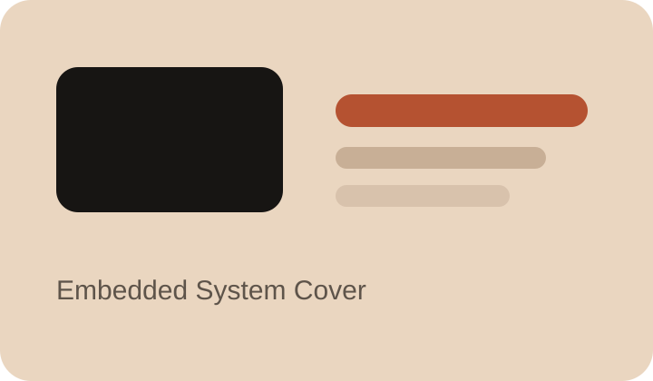
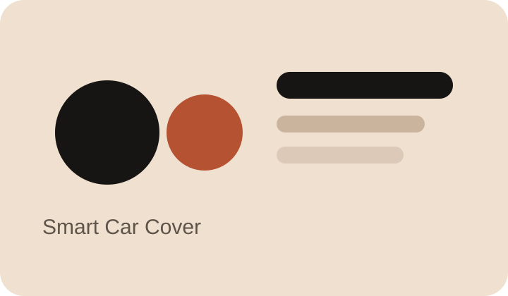
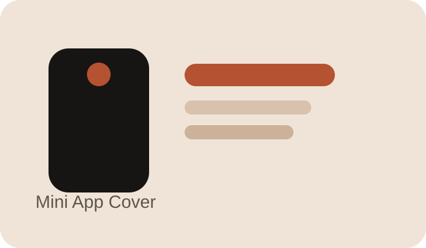

Embedded / Competition
嵌入式系统应用开发
参加江苏省职业院校技能大赛，基于 CH32H417QEU6 与 RT-Thread 完成系统开发和整机联调。
结果点：负责系统方案设计、任务拆解、多外设驱动适配与稳定性优化
查看详情Featured Projects
先看懂这是什么项目，再决定要不要点进去看完整细节。

Embedded / Competition
参加江苏省职业院校技能大赛，基于 CH32H417QEU6 与 RT-Thread 完成系统开发和整机联调。
结果点：负责系统方案设计、任务拆解、多外设驱动适配与稳定性优化
查看详情
AI / Android
结合视觉识别模型训练、Android 客户端维护和多传感器接入的智能小车平台项目。
结果点：训练 10 余种模型，综合识别准确率 90% 以上，并优化实时交互体验
查看详情
Mini App / Product
一个围绕情绪共振星图、认知重塑和自然语言交互设计的微信小程序项目。
结果点：独立完成前后端开发、模型接入和云服务器部署流程
查看详情Skills & Toolkit
这里聚焦你真正希望别人快速判断的部分：专业技能、证书和工具能力，而不是学校背景。
Core Skills
Certificates
AI Toolkit
模型工具：GPT、Gemini、Claude、通义、DeepSeek、GLM、Kimi、MiniMax。
开发提效：AI 编程、Bug 修复、Agent、Dify。
工作提效：文档撰写、方案整理、PPT 制作、资料检索。
About
我更喜欢做能真正落地的项目，也愿意把项目表达清楚。 在嵌入式、端侧 AI、Android 客户端和小程序之间，我一直在找能把“技术实现”和“实际体验”连起来的方式。
希望寻找能让我继续做真实项目、继续积累工程能力和表达能力的实习、校招或合作机会，也期待参与更多嵌入式、AI 与终端交互结合的项目。
Contact
如果你想继续聊项目、实习机会或合作，可以直接从这里联系我。